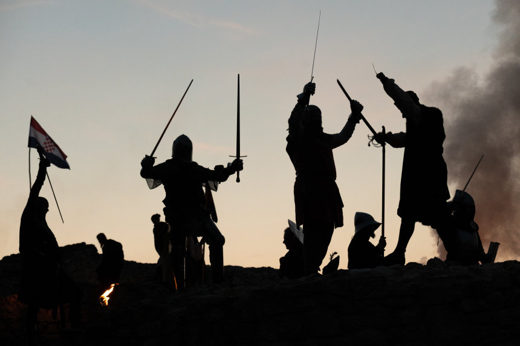
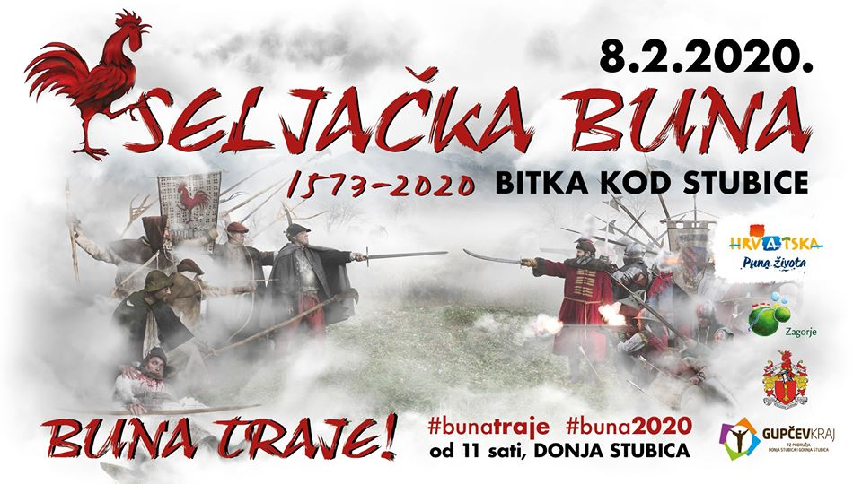
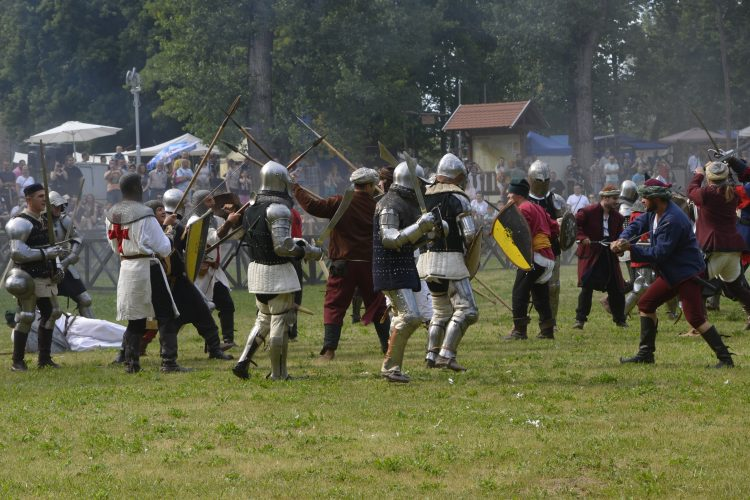
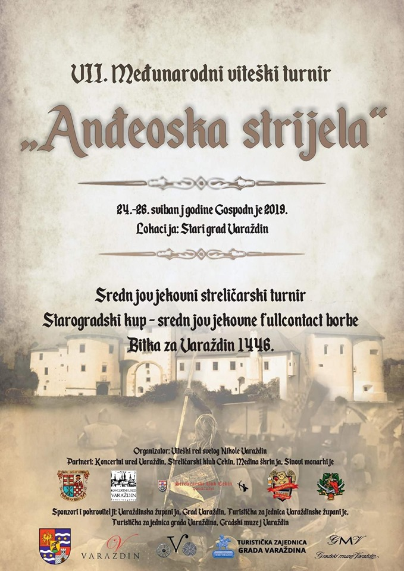

Vijesti
ADVENTSKI VITEŠKI TURNIR NA ZELINGRADU
Muzej Sveti Ivan Zelina, u subotu 04.12.2021. u vremenu od 10:00 do 15:00 sati, organizira ''Adventski viteški turnir na Zelingradu''.
Uz brojne skupine u programu su i turnir u mačevanju i streličarstvu, razne radionice, koncert srednjovjekovne glazbe.
Manifestacija će se održati uz pridržavanje epidemioloških mjera.
More ...

Bitka za utvrdu Čanjevo
Bitka za utvrdu Čanjevo, već 16. po redu, održat će se u subotu, 2. listopada, u Općini Visoko.
Program počinje u 12 sati 3D streličarskim turnirom, a od 14 sati starta rekreacijska vožnja biciklom od središta općine do utvrde Čanjevo,
u organizaciji BK Gurvenal Visoko.
More ...

SELJAČKA BUNA 2020 - povijesno turistički spektakl koji se ne propušta!
Buna traje!!! Već 12 godina ori se na zagorskim bregima kao spomen ustanka malog čovjeka u borbi za „pravicu“.
More ...

Bojevi za Sisak
Gradski muzej Sisak obavještava kako je došlo do promjene datuma održavanja manifestacije Bojevi za Sisak .
Bojevi za Sisak održat će se u subotu, 23. lipnja s početkom u 12 sati.
More ...

'ANĐEOSKA STRIJELA' Međunarodni viteški turnir u Varaždinu
Viteški red Sv. Nikole i ove godine u sklopu svog programa 'Srednjovjekovni Varaždin - oživljena povijest' od 24. do 26. svibnja, organizira tradicionalni, sedmi po redu, međunarodni viteški turnir 'Anđeoska strijela'.
More ...